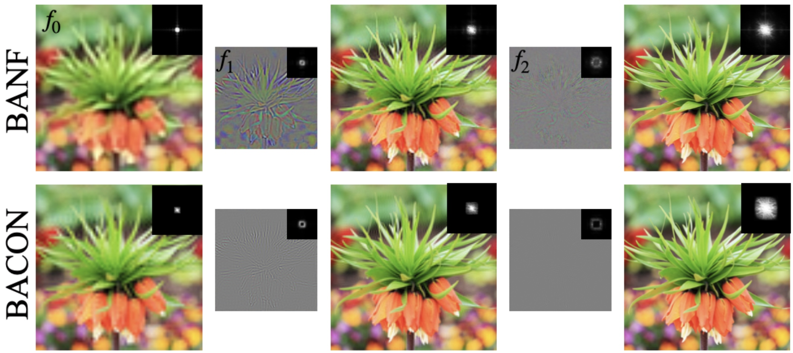
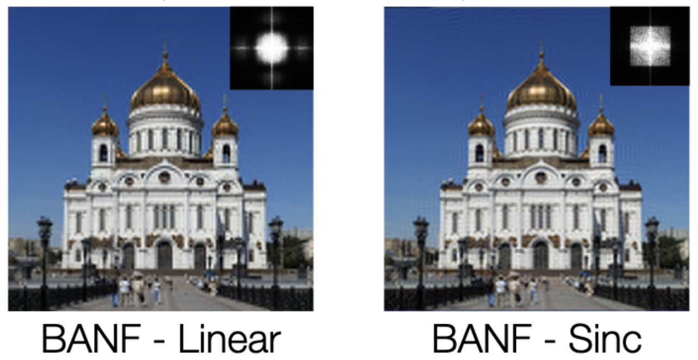

Largely due to their implicit nature, neural fields lack a direct mechanism for filtering, as Fourier analysis from discrete signal processing is not directly applicable to these representations.
Effective filtering of neural fields is critical to enable level-of-detail processing in downstream applications, and support operations that involve sampling the field on regular grids (e.g. marching cubes).
Existing methods that attempt to decompose neural fields in the frequency domain either resort to heuristics or require extensive modifications to the neural field architecture.
We show that via a simple modification, one can obtain neural fields that are low-pass filtered, and in turn show how this can be exploited to obtain a frequency decomposition of the entire signal.
We demonstrate the validity of our technique by investigating level-of-detail reconstruction, and showing how coarser representations can be computed effectively.
Main Idea
Our core insight is that by regularly sampling a field, and then interpolating this field with a band-limited kernel can be seen as a low-pass filtering operation.
Left – training a neural field to a 1D signal, and sampling the result a-posteriori on a regular lattice.
Right – Our approach trains the neural field in a sampling-aware manner: predicting the field values directly at the grid sample locations and then (linearly) interpolating.
This enables us to control the frequency bandwidth of the prediction by simply changing the grid's sampling frequency.
Note that this method of controlling frequency bandwidth is agnostic to architecture and can be applied to any neural field model.
By adjusting the grid resolution, we can control the specific frequency band that our model is capable of representing,
effectively creating a low-pass filtered signal.
Additionally, by modifying the interpolation kernel, we can directly influence how a neural field behaves in the Fourier domain.
Applications
We demonstrate the efficacy of our method in frequency decomposition with distinct applications:
2D image fitting, 3D shape fitting with signed distance field supervision,
3D shape recovery from inverse rendering and novel view synthesis
2D Reconstruction
Multi-scale reconstruction and Fourier spectra of BANF compared against BACON.

By changing the interpolation kernel we can control the frequency cut in the Fourier domain. Sinc interpolation is more accurate for controlling the frequency cut-off, but it is more computationally expensive.
Linear kernel is faster but less accurate (although allows to get rid of Gibbs ringing artifacts).

3D Reconstruction
We demonstrate that our method can directly decompose frequencies of 3D shapes.
Even in complex scenarios where only 2D images of a 3D signal are available. Results of 3D shape fitting:
Ours@32
iNGP@32
Ours@64
iNGP@64
Ours@128
iNGP@128
Novel View Synthesis
Our method enables frequency decomposition of 3D scenes without explicit supervision of downsampled images during training.
Our method sometimes produces oversmooth results due to the use of a linear kernel for interpolation.
BibTeX
@article{ahan2024banf,
author = {Shabanov, Ahan and Govindarajan, Shrisudhan and Reading, Cody and Goli, Lily and Rebain, Daniel and Moo Yi, Kwang and Tagliasacchi, Andrea},
title = {BANF: Band-limited Neural Fields for Levels of Detail Reconstruction},
journal = {Conference on Computer Vision and Pattern Recognition (CVPR)},
year = {2024},
}